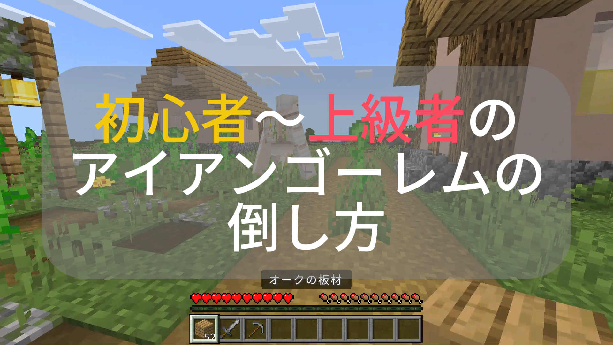

鉄の巨像を制す：上級者のためのアイアンゴーレム制圧術

村の守護者、アイアンゴーレム。HP100（ハート50個分）という圧倒的なタフさと、装備なしでは即死もあり得る攻撃力を持つ。初心者は土ブロックを3段積んで安全圏を作るが、上級者は環境と仕様を武器にする。
1. 環境を利用した4つのハメ技
- ボートによる物理拘束： ゴーレムの当たり判定は大きい。移動経路上にボートを置くだけで、巨体を小さな座席に固定できる。一度乗れば攻撃判定も消失するため、素手でも安全に解体が可能だ。
- 溶岩バケツによる「事故死」偽装： 足元に溶岩を設置し、火がついたら回収する。これを繰り返すことで、村人からのヘイトを買わずに鉄を入手できる。
- リードを用いた高所吊り下げ： フェンスにリードで繋ぐことで、一定範囲内に動きを封じ込める。そのまま足元のブロックを壊せば、落下ダメージでの大幅削りも狙える。
- リーチ差を利用したアンダーアタック： 自身が1ブロック分低い位置から攻撃することで、ゴーレムの「跳ね上げ攻撃」の射程から外れつつ、一方的に足を叩くことができる。
2. 「3.5ブロック」の距離感とステップ
統合版において、ゴーレムの攻撃射程は約3.5ブロックと言われている。これはプレイヤーの攻撃射程（約3ブロック）よりもわずかに長い。
上級者のバックステップ技術
1. 攻撃の瞬間に前進し、ヒットした瞬間に後退（Sキー/スティック後ろ）を入れる。
2. 攻撃を受けそうになったら「ジャンプ」を合わせる。これによりノックバックの勢いで射程外へ逃げやすくなる（ノックバックキャンセル）。
ジャンプの落下タイミングで攻撃を当てる「クリティカル」は必須だ。通常攻撃よりも少ない手数で倒せるため、武器の耐久値の節約にも繋がる。
3. 村人の信頼度（好感度）メカニズム
村の経済を守るためには、信頼度（Popularity）の管理が欠かせない。直接攻撃でゴーレムを倒すと、その村での好感度が下がり、取引価格が跳ね上がる。
このペナルティを避けるには、前述の「溶岩」のほか、火打ち石での着火、サボテン、あるいは高い場所からの落下など、「環境要因」でとどめを刺すのがプロの鉄則だ。
4. 応用：トラップ効率を上げる「即時処理」
アイアンゴーレムトラップにおいて、ゴーレムが生き残っている時間は「次のスポーン」を阻害する。上級者は湧き層から処理層への移動を最短にし、かつ「焚き火」や「溶岩」で瞬時にHPを削る設計を行う。
特に統合版では、村の判定（ベッドの数や村人の職業）がシビアなため、処理効率がそのまま時給換算の鉄の量に直結する。
5. まとめ ― 知識は剣よりも強し
アイアンゴーレムは強敵だが、その挙動を理解すれば「ただの鉄の塊」に過ぎない。ブロックを積む手を止め、環境を操り、ステップで翻弄する。そんなスマートな戦闘スタイルをぜひ試してほしい。